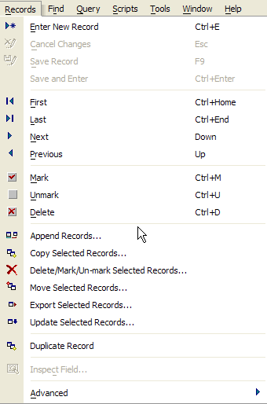
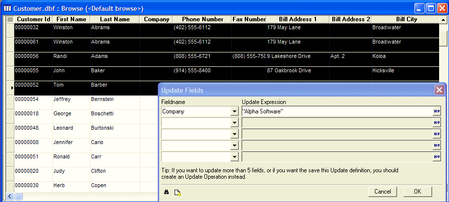

Using Quick Operations
Often, when you are viewing records in form or browse view, you would like to do a quick Operation on the data (such as Update the value in a selected field in the records that are currently selected), or copy the selected records to a new table, or move the selected records to a new table. You have no need to save the Operation definition for future use. In these cases, the ad-hoc, quick Operations are ideal because they generally involve far fewer steps than defining a new saved Operation.
When viewing records in a form or Browse, you can use the Records menu for quick access to the following ad-hoc Operations.

 Note : Ad-hoc Operations
provide a subset of the features available when you define operations
from the Operations tab on the Control
Panel.
Note : Ad-hoc Operations
provide a subset of the features available when you define operations
from the Operations tab on the Control
Panel.
The following ad-hoc Operations are available:
|
Operation |
Action |
|
Append Records |
Append records from another table into the table you are currently viewing. |
|
Copy Selected Records |
Copy the currently selected records in the form or browse window to a new, or an existing table. |
|
Delete/Mark/Un-mark Selected Records |
Delete, mark or un-mark the currently selected records in the form or browse window. |
|
Move Selected Records |
Move the selected records to another table. The records are copied to the destination table, and then deleted from the source table. |
|
Update Selected Records |
Update the data in up to five fields in the selected records. |
 Note : When you use
the ad-hoc Operation commands in browse mode, you can select the records
on which the operation works, using the record selector. For example,
by selecting records in browse mode, the Update Selected Records operation
will only update the selected records.
Note : When you use
the ad-hoc Operation commands in browse mode, you can select the records
on which the operation works, using the record selector. For example,
by selecting records in browse mode, the Update Selected Records operation
will only update the selected records.
